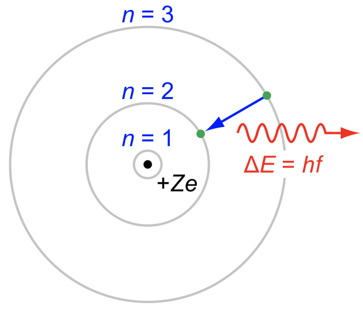
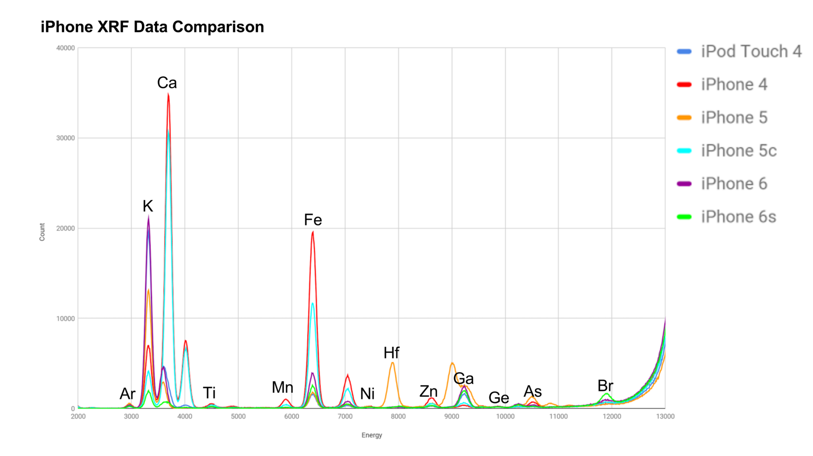
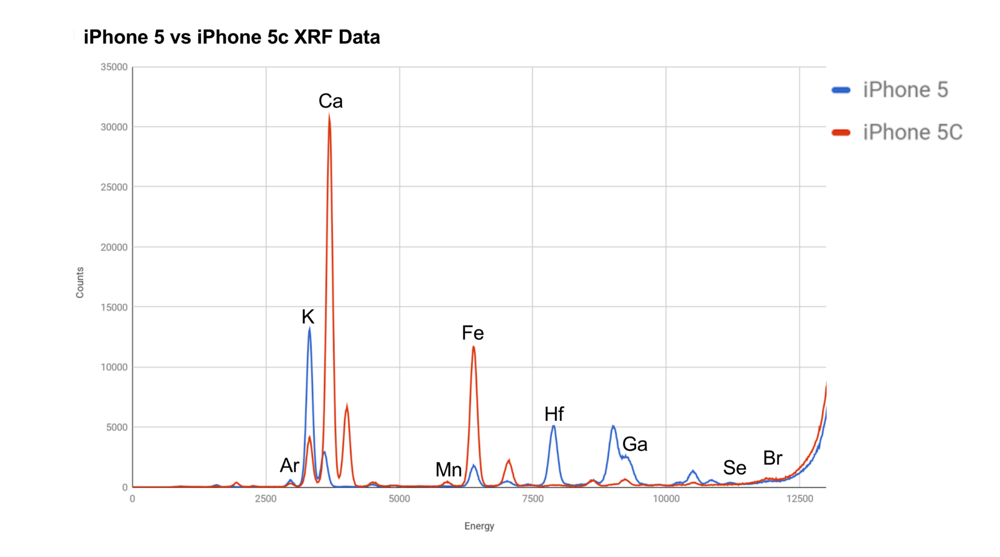
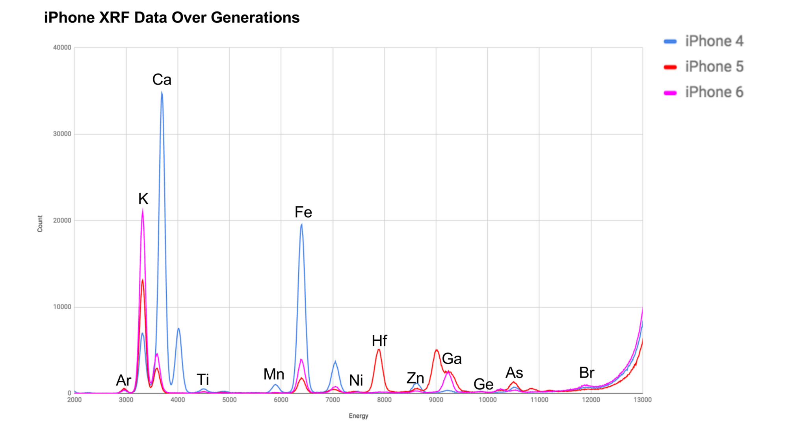

In July of 2017, nine SHAD Fellows participated in a fast-paced version of the Students on the Beamline program at the University of Saskatchewan. Other than flat ground(and more flat ground), Saskatchewan is home to a synchrotron light source, the only one in Canada and one of eight in North America.
A synchrotron particle accelerator uses about 900 billion electrons at any point in time, sped up to around 1.38×10⁹ km/hr - fast enough to reach the moon in a second. As these electrons spin, certain laws of physics allow them to produce extremely powerful light. The light produced at the synchrotron is millions of times brighter than the sun.
At the CLS, our team decided to investigate the strength of glass based on it's chemical composition. Because of the busy program, we had twenty hours over two weeks to come up with an idea, research, gather samples and analyze the data. We wouldn't have gotten anything done without large amount of donations, including:
- iPod Touch 4
- iPhone 4
- iPhone 5
- iPhone 5c
- iPhone 6
- iPhone 6s And many other non-Apple devices. Many of the Android devices used Gorilla Glass, and given how notorious Apple is for planned obsolescence.
Spoiler alert: Since the iPod Touch 4, the quality of glass from these devices has been increasing. Apple does not use cheaply produced glass hoping that people visit their expensive repair shops more often.
Anywho, really bright lights are cool. X-Rays are essential for doctors, and your desk light helps you to read through the night. Synchrotrons aim lights at samples to gather information about chemical composition, map where elements are found and model the molecular structure of samples.
During our experiment we worked with the XRF technique - X-Ray Fluorescence. The high energy rays of light strike the atoms in the sample, exciting the electrons. Electrons from lower energy orbitals (for example, an electron from n = 2) will be dislodged from the atom, causing an electron from a higher energy orbital to fall into it's place. This will release a very specific amount of energy, which when measured can be used to identify the element. Add a few asterisks to the information you just read, cause it's physics and it's not really that straightforward.

Gorilla Glass tells us that they use an ion-exchange process to add potassium ions to their glass, with the theory that larger ions will cause the glass to be stronger. Sodium ions are replaced by larger potassium ions, creating compressive stress in the glass, and thus more resistant to damage.
Here's what we found in our samples;

This graph may be a pain to read :p
With the XRF technique, we were able to determine relative compositions. Each peak represents the presence of a different element (as labeled). As a quick note, we still have no clue what was up with the halfnium in the iPhone 5. iPhones seem to have increasingly more potassium(K) over time, though the iPhone 6s appears to be an anomaly, though can be ignored since the phone we used was severely cracked and a powdered glass sample was used.
In case you're curious, unlabeled peaks are secondary peaks of an element. Depending on the electron that is dislodged, different energies will be released. Arsenic(As) is commonly used in glass production, and is expected to be present in glass. The argon peak at the beginning is just from the air.

The iPhone 5C was a cheap and very popular phone. Without a contract, they started at $99 USD while the iPhone 5 started at $649 USD. It wasn't just the specs that caused this huge price difference - the differences in quality can be observed in the glass. The iPhone 5C had significantly less potassium(K) and more calcium(Ca). Apple was likely able to use calcium as a cheaper substitute for potassium as they're both Alkali Metals and share similar properties. The Iron(Fe) is most likely an impurity.

In this graph, you can see the amount of potassium(K) increase when the model of the iPhone is more recent. Additionally, there seems to be a big leap between their approach to getting stronger glass from the iPhone 4 to the 5 and 6 (Good job Apple!). The obvious question, is why not just stuff it with all the potassium possible? With the atomic structure of glass (and other properties), having too many large ions could actually cause bends or bumps in the glass. There's a good chance they have a research team dedicated to improving the glass on their phones.
It's always good to know that Apple is really trying to make our phones last longer, and they're not really hoping that you're visiting their expensive-ass Genius Bar with shattered screens.
Thanks for reading,
Carol Chen, the rest of the team and scientists at the CLS